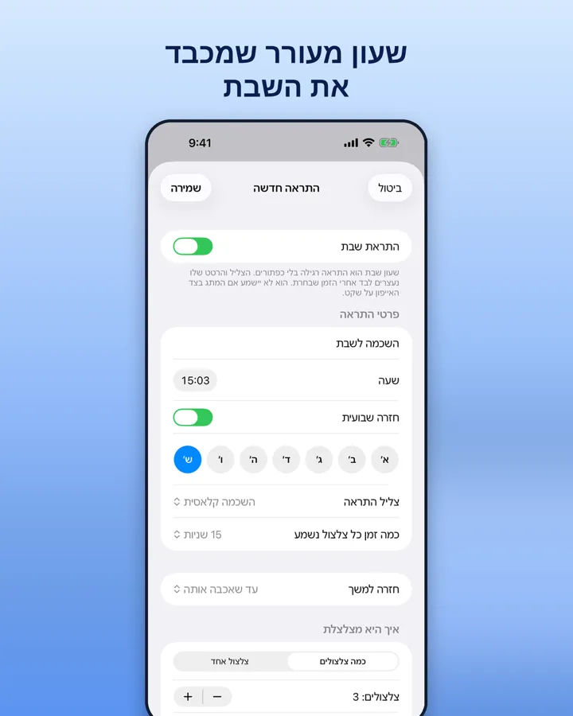
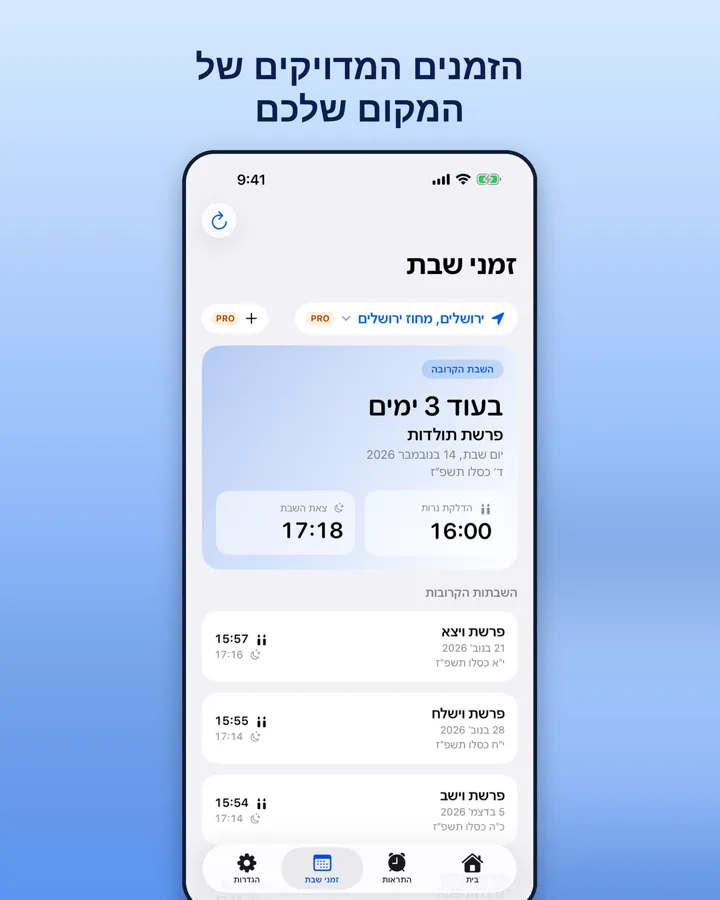

שעון מעורר לשבת
Shabbat Waker
שעון מעורר שמכיר את השבת. התראות רגילות שמצלצלות גם כשהאייפון על שקט, והתראת שבת עדינה שנפסקת מעצמה.
האפליקציה
ככה היא נראית






בקצרה
מה טוב לדעת
התראות שמצלצלות
התראות רגילות הן שעוני מעורר של המערכת, ולכן הן מצלצלות גם כשהאייפון על שקט.
התראת שבת
בשבת ההתראה היא הודעת מערכת רגילה. היא נפסקת מעצמה אחרי 10 עד 50 שניות, בלי לגעת במכשיר.
זמנים לפי המיקום
הדלקת נרות וצאת שבת לפי המיקום שלכם, יחד עם פרשת השבוע והחגים.
בכל מקום באייפון
ווידג׳טים למסך הבית ולמסך הנעילה, Apple Watch ו-Siri.
פרטיות
לחישוב הזמנים נשלח רק המיקום המדויק לשירות Hebcal. בלי חשבון, בלי פרסומות ובלי מעקב.
חמש שפות
עברית, אנגלית, צרפתית, רוסית וספרדית.
חינם, עם Pro אופציונלי
ההורדה והליבה של האפליקציה חינמיות: התראות, זמני הדלקת נרות וצאת שבת, וווידג׳טים. יש גם שדרוג Pro אופציונלי עם תוספות. שום דבר בו אינו חובה, ואפשר להשתמש באפליקציה כמו שהיא.
עוד מאיתנו